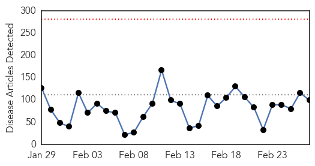
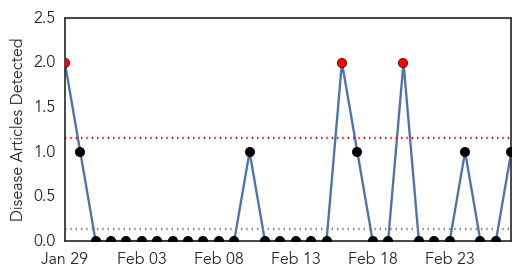
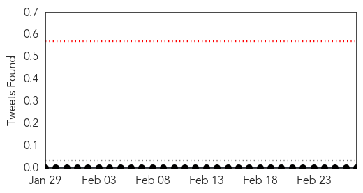
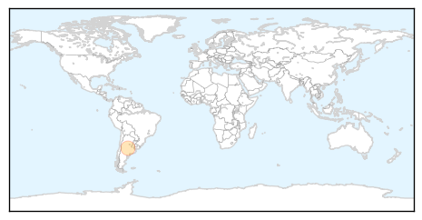

Ebola
30-Day Web Trend
0 alerts, 0 warnings

30-Day Twitter Trend
7 alerts, 3 warnings

Article Locations

Article Confidences

Top Articles:
- 1.000
- Liberia’s President Urges U.S. to Continue Ebola Aid
- 1.000
- Ebola outbreak: Disease ebbs in West Africa as aid agencies warn against complacency
- 1.000
- Two children being tested for Ebola virus at Royal Children's Hospital Melbourne are clear
- 0.999
- Ebola is not over yet
- 0.999
- Bioethics review cites Ebola response glitches, offers advice
- 0.999
- Thoughts turn to recovery as Ebola slowly ebbs in West Africa
- 0.998
- Decision on Ebola mass vaccination in August at earliest: WHO
- 0.997
- Read Health News & Articles at TheHealthSite.com
- 0.997
- Politico SL News Sierra Leone gov’t consults to open border
- 0.995
- Ellen Johnson Sirleaf: Ebola battle far from over
- 0.995
- Decision on Ebola Mass Vaccination in August at Earliest
- 0.995
- Decision on Ebola mass vaccination in August at earliest
- 0.995
- US wraps up Ebola military mission in Liberia
- 0.994
- Fatality rate from Ebola mysteriously dropping;
- 0.993
- Liberia leader thanks US as Ebola mission ends
- 0.993
- WHO: Sharp decline in Ebola cases has now leveled off
- 0.992
- Media, politicians fueled the public's fear
- 0.991
- Three words of advice for WHO Africa's new chief
- 0.989
- U.S. Ebola survivor Dr. Craig Spencer gives his side of the stor
- 0.988
- U.S. Ebola survivor Dr. Craig Spencer gives his side of the stor - KLTV.com-Tyler, Longview, Jacksonville, Texas
- 0.988
- Asian herb holds promise in fight against Ebola
- 0.985
- Obama Tells Liberia’s Johnson Sirleaf Ebola Aid Will Continue
- 0.984
- Liberia-U.S. clinical research partnership opens trial to test Ebola treatments
- 0.984
- A Canadian epidemiologist on the challenges of staying ahead of the Ebola virus in West Africa
- 0.984
- A Chinese Traditional Drug Compound was Assessed as the Most Effective Drug In Stopping Ebola Virus Infection, Study
- 0.983
- U.S. Ebola survivor Dr. Craig Spencer gives his side of the stor
- 0.981
- Ebola aid workers return home safely - Sierra Leone
- 0.980
- Wipeout Run coming to Baltimore
- 0.980
- Little Italy coming together for ravioli dinner
- 0.980
- Carroll County Sheriff's make burglary arrest
- 0.979
- UVF alum among Time magazine Person of the Year honorees for Ebola epidemic work
- 0.979
- NIAID partners with Liberian government to test ZMapp drug for Ebola virus disease
- 0.978
- Early Warning for Ebola: Strengthening Africa's Capacity to Anticipate Risk of Outbreaks
- 0.978
- Trapping the Ebola virus in transit
- 0.976
- US Ends Its Ebola Military Mission in Liberia
- 0.974
- 'Extraordinary Strides' Fighting Ebola in Liberia
- 0.973
- Jimmy Whitworth to take up epidemic preparedness role at London School of Hygiene & Tropical Medicine
- 0.972
- News, Sports, Jobs, Community - The Leader Herald
- 0.965
- Liberia mission done, 101st Airborne heads home
- 0.962
- Edmonton aid worker back from life-changing mission in Sierra Leone
- 0.960
- Liberian Leader Thanks US for Ebola Support
- 0.958
- TSRI scientists show how to target weak spots of Marburg virus with future treatments
- 0.957
- Thoughts turn to recovery as Ebola slowly ebbs in West Africa
- 0.957
- 101st Airborne Division cases colors, heads home after successful mission in Liberia
- 0.953
- Polio and Ebola: Legacy in Action - Sierra Leone
- 0.944
- Thoughts turn to recovery as Ebola slowly ebbs in West Africa
- 0.943
- Thoughts turn to recovery as Ebola slowly ebbs in West Africa
- 0.942
- Ernest Koroma is Constantly Inspiring; The Ebola Audit is Latest Example
- 0.939
- Thoughts turn to recovery as Ebola slowly ebbs in West Africa, Africa News & Top Stories
- 0.939
- Liberia will end Ebola curfew and reopen borders, says president
Showing top 50 articles...
Top Tweets:
- 0.966
- MT: New findings about the spread of the Ebola virus... http://t.co/d80AJfzu4w UniFreiburg Ebola Translated: Google
- 0.955
- Ebola Update: 23781 confirmed probable & suspected cases reported in 3 most affected countries with 9637 deaths.
- 0.929
- RT: 99 Ebola cases in past week nearly two-thirds in Sierra Leone: WHO: Guinea Liberia and Sierra Leone reported... http:/…
- 0.883
- 1.@DlaminiZuma applauds 20% of Liberia’s households for returning to work after the Ebola outbreak AfricaAgainstEbola
- 0.796
- Ex-Ebola Czar Ron Klain: 5 management lessons from the Ebola outbreak http://t.co/j5jokmq7Sy
- 0.732
- Fatality Rate Is Falling in West African Ebola Clinics - New York Times http://t.co/m5QGr819tr ebola EVD
- 0.732
- Fatality Rate Is Falling in West African Ebola Clinics - New York Times http://t.co/O2IZzw3Cfq ebola EVD
- 0.718
- RT: Sierra Leone lockdown will not help halt Ebola: MSF http://t.co/rrljv5Dx7J Reuters Africa Ebola EbolaOutbreak
- 0.689
- Liberia's President Urges US to Continue Ebola Aid - New York Times http://t.co/5tF5DFrxBV ebola EVD
- 0.685
- support to Ebola Outbreak in WestAfrica(ASEOWA) is a special task force to fight against ebola http://t.co/jKaVIRMZ7U
- 0.636
- RT: Liberian Leader Thanks US for Ebola Support: Seven months after the Ebola outbreak turned Liber... http://t.co/Y8b0UcDXPx Eb…
- 0.628
- RT: Just called from Liberia: Down to only one confirmed case of Ebola.
- 0.627
- For the latest information about the 2014 Ebola outbreak in West Africa see our update page http://t.co/TaSzwYJLgj
- 0.623
- RT: We seem to think Ebola is over. But Guinea & Sierra Leone are still recording as many cases a week as many previous ou…
- 0.610
- RT: No new Ebola case for past 7 days. Only 2 confirmed cases in ETU in Montserrado County. @CDCgov @…
- 0.593
- Decision on Ebola mass vaccination in August at earliest: WHO - Reuters http://t.co/DxWFiMCs91 ebola EVD
- 0.593
- Decision on Ebola mass vaccination in August at earliest: WHO - Reuters http://t.co/8a9IQaApUt ebola EVD
- 0.586
- US Liberia kick off trial of Ebola drug ZMapp - Reuters http://t.co/erJAasRcxU ebola EVD
- 0.571
- It seems likely that Ebola has died out in this region many many times before when individ cases didn't transmit.
- 0.531
- Patient transported from Clarendon apartment does not have Ebola - Washington Post http://t.co/j76hJh9BeT ebola EVD
- 0.521
- Ebola-hit countries are opening their borders. How did a lock down impact the residents? Read our Ebola In-depth: http://t.co/n8xgczbPMQ
- 0.520
- [WASHPOST] The world should learn from the Ebola crisis to combat MERS in Saudi Arabia http://t.co/K1Q5m8FlMf EBOLANEWS
- 0.520
- The world should learn from the Ebola crisis to combat MERS in Saudi Arabia http://t.co/ZZA34rVr4T
West Nile Virus
30-Day Web Trend
3 alerts, 0 warnings

30-Day Twitter Trend
0 alerts, 0 warnings

Article Locations
Article Confidences

Top Articles:
Top Tweets:
-
No tweets found for Feb 27, 2015